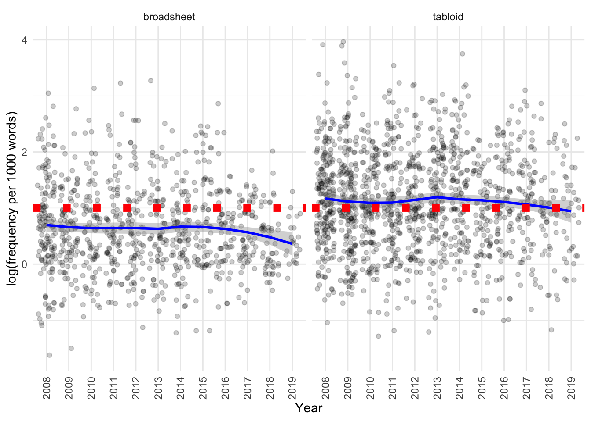

Exploring usage of the lemma FAT
There is interest in exploring statistics around the use of the word “fat” with a negative connotation around the following research questions:
- Do tabloids use “fat” with a negative connotation more than broadsheets?
- Or do broadsheets use “fat” with a negative connotation more than tabloids?
- Or is there no discernible pattern of use?
- Is there any newspaper that uses fat with a negative connotation more than others?
- Any year where fat with a negative connotation is the most frequent/least frequent?
Additional question:
- Is there a difference of use by primary topic?
Executive summary
1. Tabloids use the word “fat” in a negative context more frequently than broadsheets.
More specifically, a Welch Two Sample t-test testing the difference between the frequency in broadsheets per 1000 words and frequency in tabloids (mean of broadsheets = 2.62, mean of tabloids = 4.49) suggests that the effect is negative, statistically significant, and small (difference = -1.87, 95% CI [-2.18, -1.56], t(2251.24) = -11.73, p < .001; Cohen’s d = -0.47, 95% CI [-0.55, -0.39])
The total number of uses of “fat” we observe is higher in tabloids and lower in broadsheets than we would expect based on the word count in these subcorpora (p < 0.001).
The number of articles with use of “fat” we observe is not different between tabloids and broadsheets.
2. Tabloids have shorter article lengths than broadsheets, as demonstrated in the analysis of obese.
3. In this case (but not that of obese or overweight), bootstrap re-sampling of the counts of use of the word “fat” in a negative connotation revealed that raw counts were higher in broadsheets than in tabloids (so the opposite of the above result), in part due to more articles in broadsheets having 7+ uses vs only tabloids (23 vs 10 articles, respectively). So the result described above is in part attributable to the longer length of articles in broadsheets vs tabloids.
4. Investigating the data by source and year revealed that these variables explained a small amount of variance in the data, with the word fat being used less frequently in the Age, Australian, Canberra Times and Sydney Morning Herald had a lower frequency of use of the word “fat” relative to the Advertiser, while in the Northern Territorian the word “fat” was used somewhat more frequently than in the Advertiser. The word “fat” was not used differently in the corpus across the time period.
4. Significant differences in the use of “fat” were observed in articles on different topics, with articles annotated as “Awards”, “Women and Pregnancy” and “Bio-medical Research” using more instances per 1000 words than articles discussing “Students and teachers”, “Politics” and “Food”.
5. Significant differences in article topics were also observed between tabloids and broadsheets, as discussed in the analysis of obese.
Data source
CQPweb data was provided. To calculate normalised frequency, we divide the number of observations from CQPweb by the word count as calculated in Python, and multiple by 1000.
Code
adj_fat <- read_csv(here("200_data_clean", "fat_annotated.csv"))
topic_labels <- read_csv(here("100_data_raw", "topic_labels.csv"))
fat_annotated <- inner_join(
adj_fat, topic_labels, by = c("dominant_topic" = "topic_number")) %>%
mutate(frequency = 10^3*no_hits_in_text/wordcount_total)
metadata <- read_csv(here("100_data_raw", "corpus_cqpweb_metadata.csv"))
additional_source_metadata <- read_csv(here("100_data_raw", "addition_source_metadata.csv"))
topic_labels <- read_csv(here("100_data_raw", "topic_labels.csv"))
metadata_full <- inner_join(inner_join(metadata,
topic_labels,
by = c("dominant_topic" = "topic_number")),
additional_source_metadata)We group articles into tabloids and broadsheets, and by orientation, in the following manner:
| source | source_type | orientation |
|---|---|---|
| Advertiser | tabloid | right |
| Australian | broadsheet | right |
| NorthernT | tabloid | right |
| CourierMail | tabloid | right |
| Age | broadsheet | left |
| SydHerald | broadsheet | left |
| Telegraph | tabloid | right |
| WestAus | tabloid | right |
| CanTimes | broadsheet | left |
| HeraldSun | tabloid | right |
| HobMercury | tabloid | right |
| BrisTimes | broadsheet | left |
Tabloid vs broadsheet
What is the distribution of “fat” used with a negative connotation in articles?
Code
fat_annotated %>%
ggplot(aes(x = no_hits_in_text, fill = source_type)) +
geom_bar(position = "dodge2") +
labs(
x = "Number of hits in article, CQPWeb",
y = "Number of articles in corpus",
fill = "Source type"
)
no_articles_broadsheet <- metadata_full %>%
filter(source_type == "broadsheet") %>% nrow()
no_articles_tabloid <- metadata_full %>%
filter(source_type == "tabloid") %>% nrow()It seems like there is more usage in tabloids than broadsheets. Let’s divide the numbers by the total number of articles in tabloids/broadsheets, respectively.
Code
fat_annotated %>%
group_by(source_type, no_hits_in_text) %>%
count() %>%
pivot_wider(names_from = source_type, values_from = n, values_fill = 0) %>%
mutate(broadsheet = 1000*broadsheet/no_articles_broadsheet,
tabloid = 1000*tabloid/no_articles_tabloid) %>%
pivot_longer(cols = c(broadsheet, tabloid)) %>%
ggplot(aes(x = no_hits_in_text, y=value, fill = name)) +
geom_bar(position = "dodge2", stat="identity") +
labs(
x = "Number of hits in article, CQPWeb",
y = "Normalised number of articles, per 1000, in corpus",
fill = "Source type"
)
We can see that the trend of higher usage holds true for tabloids even if we consider that tabloids contribute more articles to the corpus than broadsheets.
How is this usage distributed by year (number of articles in corpus)?
Code
fat_annotated_filtered <- fat_annotated %>%
# these sources are already not present in the data, but we will
# retain this code chunk as it keeps consistency of variable names with
# other files in work, including for obese and overweight
filter(!(source %in% c("BrisTimes", "Telegraph")))
assess_year_source(fat_annotated)| source | 2008 | 2009 | 2010 | 2011 | 2012 | 2013 | 2014 | 2015 | 2016 | 2017 | 2018 | 2019 | Total |
|---|---|---|---|---|---|---|---|---|---|---|---|---|---|
| Advertiser | 34 | 39 | 27 | 28 | 29 | 39 | 25 | 28 | 17 | 18 | 11 | 9 | 304 |
| Age | 53 | 24 | 17 | 16 | 24 | 22 | 23 | 24 | 18 | 15 | 13 | 3 | 252 |
| Australian | 27 | 21 | 18 | 19 | 11 | 10 | 19 | 6 | 10 | 13 | 9 | 9 | 172 |
| CanTimes | 19 | 12 | 11 | 19 | 13 | 15 | 20 | 14 | 10 | 10 | 12 | 1 | 156 |
| CourierMail | 48 | 43 | 26 | 30 | 27 | 32 | 29 | 27 | 24 | 22 | 17 | 14 | 339 |
| HeraldSun | 65 | 54 | 50 | 50 | 36 | 35 | 26 | 18 | 24 | 18 | 9 | 6 | 391 |
| HobMercury | 19 | 14 | 12 | 12 | 9 | 11 | 5 | 3 | 6 | 9 | 8 | 4 | 112 |
| NorthernT | 19 | 14 | 9 | 4 | 6 | 7 | 10 | 0 | 5 | 7 | 2 | 2 | 85 |
| SydHerald | 41 | 43 | 38 | 27 | 31 | 29 | 27 | 27 | 25 | 22 | 18 | 10 | 338 |
| WestAus | 26 | 24 | 17 | 20 | 14 | 13 | 15 | 5 | 11 | 3 | 1 | 2 | 151 |
| Total | 351 | 288 | 225 | 225 | 200 | 213 | 199 | 152 | 150 | 137 | 100 | 60 | 2300 |
How is the frequency (per thousand words) of the usage of fat distributed by tabloids/broadsheets?
Code
We can see that the frequency is slightly higher in tabloids than in broadsheets.
And let’s also use a histogram to look at the distribution:
Code

Note that broadsheets have somewhat longer texts than tabloids:
Code

Let’s use a histogram to look at the distribution in more detail:
Code

The log-transformed word count data is approximately normally distributed.
Let’s see if the difference in length of articles using the word “fat” in tabloids and broadsheets is significant?
A higher frequency per 1000 words is detected for usage of the word “fat” in tabloids than broadsheets.
Code
frequency_broadsheet <- fat_annotated_filtered[fat_annotated_filtered$source_type == "broadsheet","frequency"] %>% pull()
frequency_tabloid <- fat_annotated_filtered[fat_annotated_filtered$source_type == "tabloid","frequency"] %>% pull()
report::report(t.test(frequency_broadsheet, frequency_tabloid))The Welch Two Sample t-test testing the difference between frequency_broadsheet and frequency_tabloid (mean of x = 2.62, mean of y = 4.49) suggests that the effect is negative, statistically significant, and small (difference = -1.87, 95% CI [-2.18, -1.56], t(2251.24) = -11.73, p < .001; Cohen’s d = -0.47, 95% CI [-0.55, -0.39])
The non-parametric FP test supports this observation:
Code
fp_test(
wc1 = frequency_broadsheet,
wc2 = frequency_tabloid,
label1 = "broadsheet",
label2 = "tabloid",
dist = mydistribution
)
Approximative Two-Sample Fisher-Pitman Permutation Test
data: wc by label (broadsheet, tabloid)
Z = -10.336, p-value < 1e-04
alternative hypothesis: true mu is not equal to 0So, yes, the frequency of use of the word “fat” is lower in broadsheets than in tabloids.
Let’s see if the difference in length of articles using the word “fat” in tabloids and broadsheets is significant?
Code
wordcount_broadsheet <- fat_annotated_filtered[fat_annotated_filtered$source_type == "broadsheet","wordcount_total", drop = T]
wordcount_tabloid <- fat_annotated_filtered[fat_annotated_filtered$source_type == "tabloid","wordcount_total", drop = T]
report::report(t.test(wordcount_broadsheet,wordcount_tabloid))The Welch Two Sample t-test testing the difference between wordcount_broadsheet and wordcount_tabloid (mean of x = 922.40, mean of y = 573.96) suggests that the effect is positive, statistically significant, and medium (difference = 348.45, 95% CI [301.88, 395.01], t(1740.32) = 14.68, p < .001; Cohen’s d = 0.64, 95% CI [0.55, 0.72])
Yes, overall articles that use the word “fat” in tabloids are significantly shorter than in broadsheets.
The non-parametric FP test supports this observation:
Code
fp_test(
wc1 = wordcount_broadsheet,
wc2 = wordcount_tabloid,
label1 = "broadsheet",
label2 = "tabloid",
dist = mydistribution
)
Approximative Two-Sample Fisher-Pitman Permutation Test
data: wc by label (broadsheet, tabloid)
Z = 14.462, p-value < 1e-04
alternative hypothesis: true mu is not equal to 0Let’s use bootstrapping to see if the raw frequencies of usage of the word “fat” are different?
Code
broadsheet_counts <- NULL
tabloid_counts <- NULL
for (i in 1:10000) {
x <- mean(sample({fat_annotated_filtered %>%
filter(source_type == "broadsheet") %>%
# note sampling 450 here as this is approx 1/2 of broadsheet
pull(no_hits_in_text)}, 450, replace = FALSE))
y <- mean(sample({fat_annotated_filtered %>%
filter(source_type == "tabloid") %>%
pull(no_hits_in_text)}, 450, replace = FALSE))
broadsheet_counts <- c(broadsheet_counts, x)
tabloid_counts <- c(tabloid_counts, y)
}
counts_comparison <- data.frame(
mean_sample = c(broadsheet_counts, tabloid_counts),
source_type = c(
rep("broadsheet", length(broadsheet_counts)),
rep("tabloid", length(tabloid_counts))))
counts_comparison %>%
ggplot(aes(x = mean_sample, fill = source_type)) +
geom_histogram()It is interesting how these two distributions do not overlap, and the raw frequencies of the use of the words “fat” in a negative connotation are higher in broadsheets than tabloids. However, the longer length of the articles from broadsheets most likely results in a lower frequency per 1000 words of counts from broadsheets than tabloids.
The Welch Two Sample t-test testing the difference between broadsheet_counts and tabloid_counts (mean of x = 1.85, mean of y = 1.48) suggests that the effect is positive, statistically significant, and large (difference = 0.37, 95% CI [0.37, 0.37], t(17591.34) = 493.31, p < .001; Cohen’s d = 6.98, 95% CI [7.67, 7.67])
The non-parametric FP test supports this observation:
Code
fp_test(
wc1 = broadsheet_counts,
wc2 = tabloid_counts,
label1 = "broadsheet",
label2 = "tabloid",
dist = mydistribution
)
Approximative Two-Sample Fisher-Pitman Permutation Test
data: wc by label (broadsheet, tabloid)
Z = 135.94, p-value < 1e-04
alternative hypothesis: true mu is not equal to 0Let’s look at the jittered plot to explore this as well:
Code
fat_annotated_filtered %>%
#| fig-cap: Raw and smoothed frequency of use of FAT in the corpus in tabloids and broadsheets, by year and publication type.
#| label: fig-l10
ggplot(aes(x = as.factor(year),
y = log(frequency),
fill = year)) +
geom_jitter(alpha = 0.2) +
geom_smooth(aes(group = source_type), col = "blue", method = "loess") +
geom_hline(yintercept = 1, col = "red", lty = 3, size = 3) +
facet_wrap(~source_type) +
theme(axis.text.x =
element_text(angle = 90, vjust = 0.5, hjust=1),
legend.position = "NA") +
labs(
x = "Year",
y = "log(frequency per 1000 words)"
)
We can see that:
- Broadsheets do have a lower frequency per 1000 words than tabloids.
- There may be an effect of year for broadsheets but not tabloids with time, with relative frequency decreasing by year.
Comparing observed to normalised to subcorpus size data
We can investigate the prevalence of the use of “fat” using goodness of fit tests, comparing the distribution in:
- tabloids vs broadsheets
- left and right leaning publications
We can do this by looking at:
- the total number of instances in each subcorpus, normalised to the total number of words in each subcorpus
- the number of articles that feature this language type, normalised to the total number of articles in each subcorpus
Tabloids vs broadsheets
The total number of uses of “fat” we observe is higher in tabloids and lower in broadsheets than we would expect based on the word count in these subcorpora (p < 0.001).
Code
chisq_instances_wc_normalised(fat_annotated_filtered, metadata_full, source_type)|> kable()| variable | value |
|---|---|
| method | Chi-squared test for given probabilities |
| parameter | 1 |
| statistic | 80.19926 |
| p.value | 3.384939e-19 |
| broadsheet_observed | 1698 |
| broadsheet_expected | 1971.43313891709 |
| tabloid_observed | 2042 |
| tabloid_expected | 1768.56686108291 |
The number of articles with use of “fat” we observe is not different between tabloids and broadsheets.
Code
chisq_articles_totalart_normalised(fat_annotated_filtered, metadata_full, source_type)|> kable()| variable | value |
|---|---|
| method | Chi-squared test for given probabilities |
| parameter | 1 |
| statistic | 0.879783 |
| p.value | 0.3482611 |
| broadsheet_observed | 918 |
| broadsheet_expected | 940.113901311012 |
| tabloid_observed | 1382 |
| tabloid_expected | 1359.88609868899 |
Left vs right-leaning publications
The total number of uses of “fat” we observe is higher in right and lower in left-leaning publications than we would expect based on the word count in these subcorpora (p < 0.001).
Code
chisq_instances_wc_normalised(fat_annotated_filtered, metadata_full, orientation)|> kable()| variable | value |
|---|---|
| method | Chi-squared test for given probabilities |
| parameter | 1 |
| statistic | 29.25461 |
| p.value | 6.346508e-08 |
| left_observed | 1416 |
| left_expected | 1579.37808137617 |
| right_observed | 2324 |
| right_expected | 2160.62191862383 |
The number of articles that use “fat” we observe is not different between left and right leaning publications.
Code
chisq_articles_totalart_normalised(fat_annotated_filtered, metadata_full, orientation)|> kable()| variable | value |
|---|---|
| method | Chi-squared test for given probabilities |
| parameter | 1 |
| statistic | 0.9299361 |
| p.value | 0.3348795 |
| left_observed | 746 |
| left_expected | 767.809501968429 |
| right_observed | 1554 |
| right_expected | 1532.19049803157 |
Differences in usage by source
Is there a difference in the usage of fat by source?
Code
fat_annotated_filtered %>%
ggplot(aes(x = reorder(source,frequency),
y = log(frequency),
fill = source_type)) +
geom_boxplot() +
theme(axis.text.x =
element_text(angle = 90, vjust = 0.5, hjust=1),
legend.position = "NA")
The visualisation suggests there may be some differences, and definitely between tabloids vs broadsheets.
What are the means and standard deviations of the frequency by source?
Code
| source | mean | median | sd | type |
|---|---|---|---|---|
| Australian | 2.281607 | 1.524404 | 2.481898 | broadsheet |
| Age | 2.614527 | 1.787311 | 3.036150 | broadsheet |
| SydHerald | 2.659197 | 1.826485 | 2.634891 | broadsheet |
| CanTimes | 2.944274 | 1.996294 | 2.861244 | broadsheet |
| CourierMail | 4.074611 | 2.816901 | 4.354308 | tabloid |
| WestAus | 4.155035 | 2.808989 | 4.476407 | tabloid |
| Advertiser | 4.314423 | 2.645503 | 4.884672 | tabloid |
| HeraldSun | 4.616753 | 2.976190 | 5.133447 | tabloid |
| HobMercury | 4.908499 | 3.017147 | 5.403502 | tabloid |
| NorthernT | 6.287128 | 4.878049 | 4.825449 | tabloid |
It seems that within the different sources among broadsheets there is not much difference among the frequency of use of the word “fat”. Among tabloids, the Northern Territorian seems to have higher frequency of use of “fat” with a negative connotation than other tabloids.
Differences in usage by year
Is there any year when “fat” is used more frequently than others?
Code
fat_annotated_filtered %>%
ggplot(aes(x = reorder(year,frequency),
y = log(frequency),
fill = year)) +
geom_boxplot() +
theme(axis.text.x =
element_text(angle = 90, vjust = 0.5, hjust=1),
legend.position = "NA")
Based on the visualisation it seems not. If we separate out by source there also doesn’t seem to be much difference. If we use a jitter plot to visualise the data, then fit a smoothing line and compare with the line of “no change” (dashed red line), we can see that there really isn’t much of a difference by source and year:
Code
fat_annotated_filtered %>%
ggplot(aes(x = as.factor(year),
y = log(frequency),
fill = year)) +
geom_jitter(alpha = 0.2) +
geom_smooth(aes(group = source), col = "blue", method = "loess") +
geom_hline(yintercept = 1, col = "red", lty = 3, size = 3) +
facet_wrap(~source) +
theme(axis.text.x =
element_text(angle = 90, vjust = 0.5, hjust=1),
legend.position = "NA") +
labs(
x = "Year",
y = "log(frequency per 1000 words)"
)There may be a subtle decrease over time in the Advertiser, Age, Canberra Times and Sydney Morning Herald, however, it is unclear whether this trend is very strong.
The distributions each year also look quite similar:
Code
fat_annotated_filtered %>%
ggplot(aes(x = reorder(year,frequency),
y = log(frequency),
fill = year)) +
geom_violin() +
theme(axis.text.x =
element_text(angle = 90, vjust = 0.5, hjust=1),
legend.position = "NA")
Code
| year | mean | median | sd |
|---|---|---|---|
| 2018 | 2.602021 | 1.883246 | 2.687849 |
| 2019 | 2.793541 | 1.908397 | 2.386139 |
| 2015 | 3.142368 | 2.132351 | 2.599177 |
| 2010 | 3.347193 | 2.493766 | 3.009772 |
| 2012 | 3.542590 | 2.366867 | 3.768130 |
| 2016 | 3.559982 | 2.425721 | 3.288919 |
| 2017 | 3.574660 | 2.538071 | 3.578586 |
| 2008 | 3.961569 | 2.597403 | 4.442870 |
| 2013 | 4.038693 | 2.673797 | 4.032539 |
| 2009 | 4.125576 | 2.496879 | 5.879841 |
| 2014 | 4.186377 | 2.500000 | 5.015075 |
| 2011 | 4.249711 | 2.403846 | 4.927228 |
Differences in usage by source type, source and year
We can also try to simultaneously model differences by source type, source and year.
As expected, a model that includes the source type (tabloid vs broadsheet) gives a better fit than one that does not:
Code
fat_annotated_filtered$scaled_year <- scale(
fat_annotated_filtered$year, scale = F)
library(lme4)
# base model
m_0_base <- lm(log(frequency) ~ 1,
data = fat_annotated_filtered)
# with source type
m_0_sourcetype <- lm(log(frequency) ~ source_type,
data = fat_annotated_filtered)
# with year
m_0_year <- lm(log(frequency) ~ scaled_year,
data = fat_annotated_filtered)
# with source
m_0_source <- lm(log(frequency) ~ source,
data = fat_annotated_filtered)
# with source and year
m_0_sourceyear <- lm(log(frequency) ~ source + scaled_year,
data = fat_annotated_filtered)
# compare
rbind({broom::glance(m_0_base) %>%
dplyr::select(-df.residual,- deviance, -nobs) %>%
mutate(model = "1")},
{broom::glance(m_0_sourcetype)%>%
dplyr::select(-df.residual,- deviance, -nobs) %>%
mutate(model = "source_type")},
{broom::glance(m_0_year) %>%
dplyr::select(-df.residual,- deviance, -nobs) %>%
mutate(model = "scaled_year")},
{broom::glance(m_0_source) %>%
dplyr::select(-df.residual,- deviance, -nobs) %>%
mutate(model = "source")},
{broom::glance(m_0_sourceyear)%>%
dplyr::select(-df.residual,- deviance, -nobs) %>%
mutate(model = "source_year")}
) %>%
dplyr::select(model, everything()) %>%
arrange(AIC) %>%
kable()| model | r.squared | adj.r.squared | sigma | statistic | p.value | df | logLik | AIC | BIC |
|---|---|---|---|---|---|---|---|---|---|
| source_year | 0.0957258 | 0.0917753 | 0.8221521 | 24.231192 | 0.0000000 | 10 | -2807.637 | 5639.274 | 5708.162 |
| source | 0.0945436 | 0.0909850 | 0.8225097 | 26.567921 | 0.0000000 | 9 | -2809.139 | 5640.279 | 5703.426 |
| source_type | 0.0753951 | 0.0749928 | 0.8297134 | 187.385926 | 0.0000000 | 1 | -2833.206 | 5672.412 | 5689.634 |
| scaled_year | 0.0029755 | 0.0025416 | 0.8615945 | 6.858039 | 0.0088823 | 1 | -2919.926 | 5845.852 | 5863.074 |
| 1 | 0.0000000 | 0.0000000 | 0.8626915 | NA | NA | NA | -2923.353 | 5850.706 | 5862.187 |
We can see that the model incorporating source and scaled year provides the best fit for the data, explaining somewhat more variability than that which includes only source or source type.
Code
anova(m_0_base, m_0_sourceyear)Analysis of Variance Table
Model 1: log(frequency) ~ 1
Model 2: log(frequency) ~ source + scaled_year
Res.Df RSS Df Sum of Sq F Pr(>F)
1 2299 1711.0
2 2289 1547.2 10 163.79 24.231 < 2.2e-16 ***
---
Signif. codes: 0 '***' 0.001 '**' 0.01 '*' 0.05 '.' 0.1 ' ' 1Code
Proportion of data points with:
- abs(standardized residuals) > 3.29: 0.13%
- abs(standardized residuals) > 2.58: 1.09%
- abs(standardized residuals) > 1.96: 5.09%
All of these indicate the model is performing reasonably well on the data.
Let’s summarise the model (note that the intercept corresponds to the “first” source, i.e. the Advertiser):
Code
sjPlot::tab_model(m_0_sourceyear) | log(frequency) | |||
|---|---|---|---|
| Predictors | Estimates | CI | p |
| (Intercept) | 1.02 | 0.92 – 1.11 | <0.001 |
| source [Age] | -0.39 | -0.53 – -0.26 | <0.001 |
| source [Australian] | -0.52 | -0.68 – -0.37 | <0.001 |
| source [CanTimes] | -0.25 | -0.41 – -0.09 | 0.002 |
| source [CourierMail] | 0.05 | -0.08 – 0.17 | 0.483 |
| source [HeraldSun] | 0.12 | -0.01 – 0.24 | 0.066 |
| source [HobMercury] | 0.18 | -0.00 – 0.35 | 0.052 |
| source [NorthernT] | 0.59 | 0.40 – 0.79 | <0.001 |
| source [SydHerald] | -0.35 | -0.48 – -0.23 | <0.001 |
| source [WestAus] | 0.06 | -0.10 – 0.22 | 0.489 |
| scaled year | -0.01 | -0.02 – 0.00 | 0.084 |
| Observations | 2300 | ||
| R2 / R2 adjusted | 0.096 / 0.092 | ||
This model indicates that the Age, Australian, Canberra Times and Sydney Morning Herald (all broadsheets in the dataset) have lower frequency of usage of the word “fat” with a negative connotation than the Advertiser, whereas the Northern Territorian has a higher usage of the language type.
Code
report::report(m_0_sourceyear)We fitted a linear model (estimated using OLS) to predict frequency with source and scaled_year (formula: log(frequency) ~ source + scaled_year). The model explains a statistically significant and weak proportion of variance (R2 = 0.10, F(10, 2289) = 24.23, p < .001, adj. R2 = 0.09). The model’s intercept, corresponding to source = Advertiser and scaled_year = 0, is at 1.02 (95% CI [0.92, 1.11], t(2289) = 21.55, p < .001). Within this model:
- The effect of source [Age] is statistically significant and negative (beta = -0.39, 95% CI [-0.53, -0.26], t(2289) = -5.62, p < .001; Std. beta = -0.18, 95% CI [-0.24, -0.12])
- The effect of source [Australian] is statistically significant and negative (beta = -0.52, 95% CI [-0.68, -0.37], t(2289) = -6.66, p < .001; Std. beta = -0.22, 95% CI [-0.29, -0.15])
- The effect of source [CanTimes] is statistically significant and negative (beta = -0.25, 95% CI [-0.41, -0.09], t(2289) = -3.07, p = 0.002; Std. beta = -0.13, 95% CI [-0.20, -0.06])
- The effect of source [CourierMail] is statistically non-significant and positive (beta = 0.05, 95% CI [-0.08, 0.17], t(2289) = 0.70, p = 0.483; Std. beta = -6.33e-03, 95% CI [-0.06, 0.05])
- The effect of source [HeraldSun] is statistically non-significant and positive (beta = 0.12, 95% CI [-7.55e-03, 0.24], t(2289) = 1.84, p = 0.066; Std. beta = 0.03, 95% CI [-0.02, 0.09])
- The effect of source [HobMercury] is statistically non-significant and positive (beta = 0.18, 95% CI [-1.69e-03, 0.35], t(2289) = 1.94, p = 0.052; Std. beta = 0.06, 95% CI [-0.02, 0.14])
- The effect of source [NorthernT] is statistically significant and positive (beta = 0.59, 95% CI [0.40, 0.79], t(2289) = 5.88, p < .001; Std. beta = 0.23, 95% CI [0.15, 0.32])
- The effect of source [SydHerald] is statistically significant and negative (beta = -0.35, 95% CI [-0.48, -0.23], t(2289) = -5.46, p < .001; Std. beta = -0.17, 95% CI [-0.22, -0.11])
- The effect of source [WestAus] is statistically non-significant and positive (beta = 0.06, 95% CI [-0.10, 0.22], t(2289) = 0.69, p = 0.489; Std. beta = -8.61e-03, 95% CI [-0.08, 0.06])
- The effect of scaled year is statistically non-significant and negative (beta = -9.25e-03, 95% CI [-0.02, 1.24e-03], t(2289) = -1.73, p = 0.084; Std. beta = -0.02, 95% CI [-0.03, -9.21e-04])
Standardized parameters were obtained by fitting the model on a standardized version of the dataset. 95% Confidence Intervals (CIs) and p-values were computed using the Wald approximation.
Next, let’s compare if using a mixed model results in improved fit.
Code
m_1_source <- lmer(log(frequency) ~ 1 + (1|source),
data = fat_annotated_filtered, REML = T)
m_1_source_type <- lmer(log(frequency) ~ source_type + (1|source),
data = fat_annotated_filtered, REML = T)
m_1_source_year_type <- lmer(log(frequency) ~ source_type + scaled_year + (1|source),
data = fat_annotated_filtered, REML = T)
m_1_source_year <- lmer(log(frequency) ~ scaled_year + (1|source),
data = fat_annotated_filtered, REML = T)
m_1_source_year2 <- lmer(log(frequency) ~ scaled_year + (scaled_year|source),
data = fat_annotated_filtered, REML = T)
m_1_source_year_type2 <- lmer(log(frequency) ~ scaled_year + source_type+ (scaled_year|source),
data = fat_annotated_filtered, REML = T)
rbind(
{broom::glance(m_0_source)%>%
dplyr::select(AIC, BIC, logLik) %>%
mutate(model = "1 + source")},
{broom.mixed::glance(m_1_source_year_type)%>%
dplyr::select(AIC, BIC, logLik) %>%
mutate(model = "source_type + scaled_year + (1/source)")},
{broom::glance(m_0_sourceyear)%>%
dplyr::select(AIC, BIC, logLik) %>%
mutate(model = "scaled_year + source")},
{broom.mixed::glance(m_1_source) %>%
dplyr::select(AIC, BIC, logLik) %>%
mutate(model = "1 + (1/source)")
},
{broom.mixed::glance(m_1_source_year_type2) %>%
dplyr::select(AIC, BIC, logLik) %>%
mutate(model = "source_type + scaled_year + (1/source)")
},
{broom.mixed::glance(m_1_source_year) %>%
dplyr::select(AIC, BIC, logLik) %>%
mutate(model = "scaled_year + (1/source)")},
{broom.mixed::glance(m_1_source_year2) %>%
dplyr::select(AIC, BIC, logLik) %>%
mutate(model = "scaled_year + (scaled_year/source)")},
{broom.mixed::glance(m_1_source_type) %>%
dplyr::select(AIC, BIC, logLik) %>%
mutate(model = "source_type + (1/source)")
}
) %>% arrange(BIC) %>%
kable()| AIC | BIC | logLik | model |
|---|---|---|---|
| 5663.524 | 5686.486 | -2827.762 | source_type + (1/source) |
| 5671.055 | 5688.277 | -2832.527 | 1 + (1/source) |
| 5671.065 | 5699.768 | -2830.532 | source_type + scaled_year + (1/source) |
| 5678.552 | 5701.515 | -2835.276 | scaled_year + (1/source) |
| 5640.279 | 5703.426 | -2809.139 | 1 + source |
| 5639.274 | 5708.162 | -2807.637 | scaled_year + source |
| 5668.853 | 5709.037 | -2827.426 | source_type + scaled_year + (1/source) |
| 5676.593 | 5711.037 | -2832.296 | scaled_year + (scaled_year/source) |
The model that includes a random intercept for each of the sources and considers source type as a fixed effect provides the best fit based on the Bayesian Information Criterion. Tabloids have a higher usage of the language type.
Code
sjPlot::tab_model(m_1_source_type) | log(frequency) | |||
|---|---|---|---|
| Predictors | Estimates | CI | p |
| (Intercept) | 0.63 | 0.47 – 0.80 | <0.001 |
| source type [tabloid] | 0.54 | 0.32 – 0.76 | <0.001 |
| Random Effects | |||
| σ2 | 0.68 | ||
| τ00source | 0.03 | ||
| ICC | 0.04 | ||
| N source | 10 | ||
| Observations | 2300 | ||
| Marginal R2 / Conditional R2 | 0.090 / 0.124 | ||
Let’s summarise this model:
Code
report::report(m_1_source_type)We fitted a linear mixed model (estimated using REML and nloptwrap optimizer) to predict frequency with source_type (formula: log(frequency) ~ source_type). The model included source as random effect (formula: ~1 | source). The model’s total explanatory power is weak (conditional R2 = 0.12) and the part related to the fixed effects alone (marginal R2) is of 0.09. The model’s intercept, corresponding to source_type = broadsheet, is at 0.63 (95% CI [0.47, 0.80], t(2296) = 7.41, p < .001). Within this model:
- The effect of source type [tabloid] is statistically significant and positive (beta = 0.54, 95% CI [0.32, 0.76], t(2296) = 4.84, p < .001; Std. beta = 0.22, 95% CI [0.14, 0.31])
Standardized parameters were obtained by fitting the model on a standardized version of the dataset. 95% Confidence Intervals (CIs) and p-values were computed using
The intercepts for for each of the sources were:
| (Intercept) | source_typetabloid | |
|---|---|---|
| Advertiser | 0.4894885 | 0.5374269 |
| Australian | 0.5108950 | 0.5374269 |
| CourierMail | 0.5297357 | 0.5374269 |
| WestAus | 0.5567112 | 0.5374269 |
| HeraldSun | 0.6025750 | 0.5374269 |
| Age | 0.6235424 | 0.5374269 |
| HobMercury | 0.6516703 | 0.5374269 |
| SydHerald | 0.6575644 | 0.5374269 |
| CanTimes | 0.7443664 | 0.5374269 |
| NorthernT | 0.9743715 | 0.5374269 |
Differences in usage by topic
Code
fat_annotated_filtered %>%
ggplot(aes(x = as.factor(
reorder(topic_label,frequency)),
y = log(frequency),
fill = topic_label)) +
geom_boxplot() +
theme(axis.text.x =
element_text(angle = 90, vjust = 0.5, hjust=1),
legend.position = "NA") +
labs(x = "Topic label",
y = "log(frequency per 1000 words)")
It seems there are some topics that use fat more than others.
We use a simple linear model with post-hoc comparisons and Bonferroni multiple testing correction:
Code
| contrast | estimate | SE | df | lower.CL | upper.CL | t.ratio | p.value |
|---|---|---|---|---|---|---|---|
| Awards - FastFood&Drinks | 7.973995 | 1.6993808 | 2283 | 1.9112363 | 14.0367536 | 4.692294 | 0.0003891 |
| Awards - FitnessExercise | 7.631596 | 1.6893761 | 2283 | 1.6045303 | 13.6586615 | 4.517405 | 0.0008948 |
| Awards - Food | 9.314549 | 1.7208689 | 2283 | 3.1751289 | 15.4539691 | 5.412701 | 0.0000093 |
| Awards - MusicMovies | 8.720687 | 1.6878559 | 2283 | 2.6990449 | 14.7423289 | 5.166725 | 0.0000352 |
| Awards - NutritionStudy | 7.918747 | 1.6962952 | 2283 | 1.8669970 | 13.9704979 | 4.668260 | 0.0004371 |
| Awards - Politics | 9.122837 | 1.6967161 | 2283 | 3.0695851 | 15.1760889 | 5.376761 | 0.0000114 |
| Awards - PublicHealthReport | 7.463489 | 1.7046693 | 2283 | 1.3818625 | 13.5451149 | 4.378262 | 0.0017003 |
| Awards - Students&Teachers | 9.378821 | 1.7908695 | 2283 | 2.9896643 | 15.7679773 | 5.237021 | 0.0000242 |
| Awards - Transport&Commuting | 9.041890 | 1.8113633 | 2283 | 2.5796197 | 15.5041610 | 4.991760 | 0.0000875 |
| Awards - WomenGirls | 7.929696 | 1.6876047 | 2283 | 1.9089498 | 13.9504419 | 4.698787 | 0.0003771 |
| BiomedResearch - FastFood&Drinks | 1.892684 | 0.3814379 | 2283 | 0.5318552 | 3.2535126 | 4.961971 | 0.0001019 |
| BiomedResearch - FitnessExercise | 1.550285 | 0.3340530 | 2283 | 0.3585078 | 2.7420618 | 4.640834 | 0.0004987 |
| BiomedResearch - Food | 3.233238 | 0.4679631 | 2283 | 1.5637195 | 4.9027563 | 6.909172 | 0.0000000 |
| BiomedResearch - MusicMovies | 2.639376 | 0.3262780 | 2283 | 1.4753374 | 3.8034142 | 8.089348 | 0.0000000 |
| BiomedResearch - NutritionStudy | 1.837436 | 0.3674470 | 2283 | 0.5265222 | 3.1483505 | 5.000548 | 0.0000837 |
| BiomedResearch - Politics | 3.041526 | 0.3693850 | 2283 | 1.7236976 | 4.3593542 | 8.234027 | 0.0000000 |
| BiomedResearch - Students&Teachers | 3.297510 | 0.6817724 | 2283 | 0.8651994 | 5.7298200 | 4.836672 | 0.0001915 |
| BiomedResearch - Transport&Commuting | 2.960579 | 0.7339189 | 2283 | 0.3422297 | 5.5789289 | 4.033933 | 0.0077049 |
| BiomedResearch - WomenGirls | 1.848385 | 0.3249763 | 2283 | 0.6889902 | 3.0077793 | 5.687753 | 0.0000020 |
| ChildrenParents - FastFood&Drinks | 1.828524 | 0.4436993 | 2283 | 0.2455704 | 3.4114783 | 4.121090 | 0.0053114 |
| ChildrenParents - Food | 3.169078 | 0.5199650 | 2283 | 1.3140366 | 5.0241202 | 6.094792 | 0.0000002 |
| ChildrenParents - MusicMovies | 2.575216 | 0.3972800 | 2283 | 1.1578688 | 3.9925638 | 6.482118 | 0.0000000 |
| ChildrenParents - NutritionStudy | 1.773277 | 0.4317307 | 2283 | 0.2330222 | 3.3135315 | 4.107368 | 0.0056344 |
| ChildrenParents - Politics | 2.977366 | 0.4333814 | 2283 | 1.4312228 | 4.5235099 | 6.870084 | 0.0000000 |
| ChildrenParents - Students&Teachers | 3.233350 | 0.7184620 | 2283 | 0.6701448 | 5.7965556 | 4.500377 | 0.0009689 |
| ChildrenParents - WomenGirls | 1.784225 | 0.3962117 | 2283 | 0.3706892 | 3.1977613 | 4.503212 | 0.0009561 |
| FastFood&Drinks - WomenPregnancy | -2.730627 | 0.6110072 | 2283 | -4.9104733 | -0.5507806 | -4.469059 | 0.0011207 |
| FitnessExercise - WomenPregnancy | -2.388228 | 0.5826030 | 2283 | -4.4667388 | -0.3097170 | -4.099237 | 0.0058345 |
| Food - WomenPregnancy | -4.071181 | 0.6684492 | 2283 | -6.4559592 | -1.6864028 | -6.090487 | 0.0000002 |
| MusicMovies - WomenPregnancy | -3.477319 | 0.5781800 | 2283 | -5.5400502 | -1.4145875 | -6.014249 | 0.0000003 |
| NutritionStudy - WomenPregnancy | -2.675379 | 0.6023721 | 2283 | -4.8244190 | -0.5263398 | -4.441407 | 0.0012734 |
| Politics - WomenPregnancy | -3.879469 | 0.6035562 | 2283 | -6.0327332 | -1.7262048 | -6.427684 | 0.0000000 |
| Students&Teachers - WomenPregnancy | -4.135453 | 0.8322550 | 2283 | -7.1046292 | -1.1662763 | -4.968973 | 0.0000983 |
| Transport&Commuting - WomenPregnancy | -3.798522 | 0.8754837 | 2283 | -6.9219227 | -0.6751220 | -4.338770 | 0.0020335 |
| WomenGirls - WomenPregnancy | -2.686328 | 0.5774465 | 2283 | -4.7464422 | -0.6262135 | -4.652081 | 0.0004725 |
We can see that there are differences in the frequency of use of the word “fat” by topic, with articles annotated as “Awards”, “Women and Pregnancy” and “Bio-medical Research” using more instances per 1000 words than articles discussing “Students and teachers”, “Politics” and “Food”.